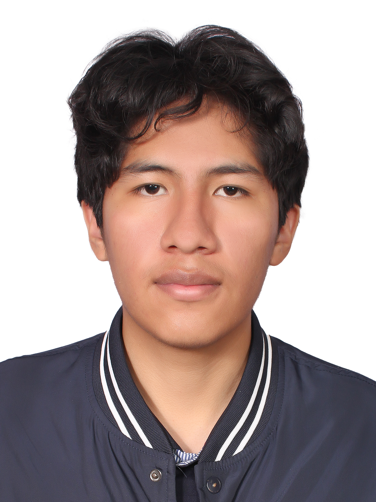

Nombre: Ariel Erick Rojas Mamani
Correo: rojamamani666@gmail.com
Teléfono: 68384608
Zona Residencial: Av. Sargento Pereira
Lugar de Nacimiento: Potosi - Bolivia
Actualmente no cuento con experiencia profesional formal, pero estoy en constante proceso de aprendizaje y desarrollo académico.
No se registran cursos o seminarios adicionales hasta el momento.
Tutor: Rafael Roldán Rojas Oyola
Escogí la carrera que actualmente estudio porque considero que la educación y la formación profesional son herramientas fundamentales para transformar mi futuro y aportar positivamente a la sociedad. Desde temprana edad he entendido la importancia del esfuerzo, la constancia y la superación personal como pilares para alcanzar metas importantes en la vida.
Mi decisión no fue tomada al azar, sino basada en el deseo de crecer intelectualmente, adquirir nuevos conocimientos y desarrollar competencias que me permitan enfrentar los desafíos del mundo actual. Estoy convencido de que la preparación académica abre puertas y genera oportunidades que pueden cambiar la realidad de una persona.
Además, elegí esta carrera porque me motiva aprender constantemente, mejorar cada día y demostrar que con disciplina y dedicación es posible alcanzar objetivos ambiciosos. Me impulsa la idea de convertirme en un profesional capaz, responsable y comprometido con la excelencia.
Considero que esta etapa de formación es una inversión en mi futuro, y estoy dispuesto a dar lo mejor de mí para culminarla con éxito. Mi meta es seguir creciendo, prepararme continuamente y contribuir con mis conocimientos al desarrollo de mi entorno.